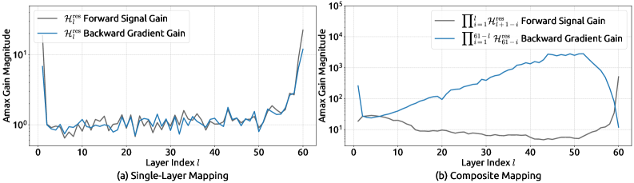
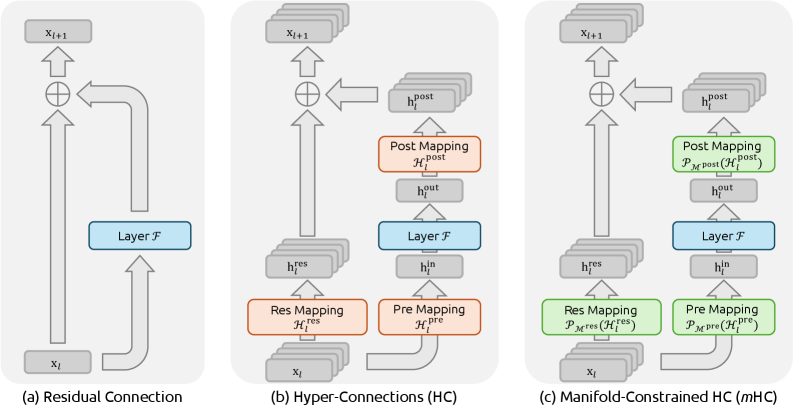
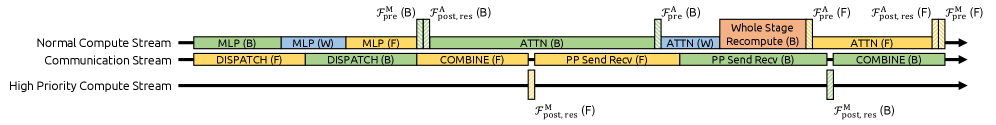
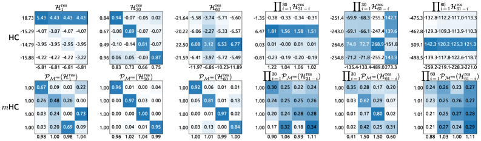

Hyper-Connections 把残差流加宽、让连接更复杂，性能更好，但也牺牲了残差连接最珍贵的「恒等映射」性质，导致大规模训练不稳定、显存与访存开销暴涨。mHC 用一个朴素的几何约束把这一切重新拉回稳定区间。
残差连接 x = x + F(x) 之所以能稳定训练超深网络，靠的是那条「原样直通」的恒等映射——它像一条守恒定律，保证信号和梯度跨层传播时既不爆炸也不消失。
Hyper-Connections（HC） 把单条残差流拓宽成 n 条，并引入可学习矩阵在流之间混合特征，表达力更强、还不增加 FLOPs。但这些矩阵没有任何约束，多层连乘后会严重偏离恒等映射，信号增益一度飙到约 3000 倍，27B 模型在 1.2 万步左右 loss 突然崩盘。
mHC 的做法只有一句话：把残差混合矩阵 ℋres 投影到「双随机矩阵」流形（Birkhoff 多面体）上——行和、列和都等于 1、元素非负。这样每次混合都是输入特征的凸组合，谱范数 ≤ 1，连乘后依然双随机，恒等映射的守恒性被完整恢复。配合一整套工程优化，mHC 在 n=4 时只增加 6.7% 训练时间。
下面顺着论文的思路走一遍：残差连接为什么稳 → HC 在哪里出问题 → mHC 怎么用流形约束修好它 → 怎么让它真的跑得快 → 实验结论。
自 ResNet 以来，残差连接十年未变，至今仍是大模型的基础构件。单层写出来很简单：
把它递归展开到第 L 层，深层的输出等于浅层信号 原封不动地加上中间所有残差函数之和：
近年宏观架构设计的焦点，转向了拓宽残差流的宽度（DenseNet、DLA，以及更近的 RMT、MUDDFormer 等）。其中最具代表性、也正是本文的直接前序工作，是 Hyper-Connections。下面这张卡片把它讲清楚——理解了 HC，才能理解 mHC 在修什么。
HC 把第 l 层输入从一条 C 维向量扩展成 n 条流（n×C），并引入三个可学习线性映射来管理这条加宽的残差流：
每个映射又分成动态部分（依赖输入，经 RMSNorm 后线性投影得到）和静态部分（与输入无关的可学习偏置）。因为 n（如 4）远小于 C，这些矩阵几乎不增加计算量，却把「残差流的信息容量」从「层的输入维度」中解耦出来——相当于在 FLOPs 和数据量之外，开辟了第三条 scaling 维度。
它在本文叙事中的角色：mHC 完全沿用 HC 的这套结构（三个映射、n 条流），只在 ℋres、ℋpre、ℋpost 上加几何约束。所以理解 HC = 理解了 mHC 的 90%。
把 HC 同样递归展开到第 L 层，浅层信号前面会多出一个残差矩阵的连乘：
论文用「Amax 增益幅度」（复合矩阵行和 / 列和的最大绝对值，分别对应前向信号与反向梯度）来量化这种偏离。理想情况下它应恒为 1，但实测在 27B 模型上，复合映射的增益峰值高达约 3000——这正是 1.2 万步 loss 崩盘的机制性原因。

HC 的计算量（FLOPs）确实没怎么涨，但 n 条流意味着访存（I/O）开销近似翻 n 倍。论文逐项核算后给出单层每 token 的总 I/O：
核心洞察来自恒等映射本身：恒等阵 ℋres=I 当然稳定，但它禁止任何跨流混合，等于浪费了多流架构。mHC 想要一个「比单位阵更灵活、又和单位阵一样守恒」的集合——这就是双随机矩阵。

mHC 把 ℋres 限制在双随机矩阵流形 ℳres（即 Birkhoff 多面体）上：
因为行和、列和都为 1，ℋresx 就成了输入特征的凸组合：特征均值守恒、信号范数被严格约束。这把三个对大规模训练至关重要的性质一并带来：
双随机矩阵的谱范数满足 ‖ℋres‖₂ ≤ 1，即它是一个非扩张映射。无论怎么学，它都不会把信号放大——这直接堵住了 HC 那条「越乘越大」的路径。
双随机矩阵集合对矩阵乘法封闭：任意多个相乘，结果仍然双随机。于是 Eq.4 里那个曾经爆炸到 3000 的复合映射 ∏ℋres，现在无论跨多少层都保持双随机，恒等映射的守恒性在任意两层之间都成立。这是 mHC 稳定性的数学核心。
ℳres 在几何上是 Birkhoff 多面体——所有置换矩阵的凸包。所以残差映射本质上是「若干种流重排的凸组合」。这类矩阵反复作用会单调地增强跨流信息混合，既保留了 HC 的表达力（流之间确实在交换信息），又不破坏守恒——稳定性与可塑性在这里达成平衡。
此外，mHC 还给读入 / 写出映射 ℋpre、ℋpost 加上非负约束（视作另一种简单流形投影），避免正负系数相互抵消造成信号湮灭。
mHC 先按 HC 原方式算出未约束的中间映射 ℋ̃，再做投影得到最终映射：
其中 σ 是 Sigmoid（保证非负）。Sinkhorn-Knopp 先用 exp 把矩阵变正，再交替地对行、列归一化，迭代收敛到双随机矩阵：
𝒯r、𝒯c 分别是行、列归一化。理论上 t→∞ 才严格双随机，实践中取 tmax = 20 次迭代作为近似——这也是后面 mHC 复合增益略微偏离 1（约 1.6）的来源。
数学上优雅还不够——n 条流和 Sinkhorn 迭代都会带来真实的访存、显存与通信成本。mHC 用三项基础设施优化把 n=4 时的额外训练时间压到只有 6.7%。
高维隐状态上的 RMSNorm 延迟很高。mHC 在保持数学等价的前提下，把「除以范数」重排到矩阵乘法之后，并用混合精度（φ 用 tfloat32、x 用 bfloat16）配合共享内存把多个算子融合成统一 kernel。
论文用 TileLang 实现了计算 ℋpre/post/res 的三类 kernel，以及 Sinkhorn 迭代的前/反向 kernel（反向时片上重算中间结果）。融合后把每 token 读取量从 (3n+1)C 降到 (n+1)C、写入量从 3nC 降到 nC。
n 条流让显存吃紧。mHC 在前向丢弃 mHC kernel 的中间激活，反向时再重新执行（但不含重型的层函数 ℱ）。对一段连续 Lr 层，只需保存第一层的输入 xl₀。
在「常驻显存」与「瞬时重算显存」之间求最优块大小，得到 Lr* ≈ √( nL / (n+2) )，并让重算边界与流水线 stage 对齐。
n 条流在流水线并行下会带来明显的跨 stage 通信延迟，stage 边界的重算也有额外开销。mHC 扩展 DeepSeek-V3 的 DualPipe 调度（见下图）来重叠通信与计算。
关键技巧：把 MLP 层的 ℱpost,res kernel 放到专用高优先级计算流上，避免阻塞通信流；注意力层不用持久 kernel 以便抢占；重算因初始激活本地已缓存而与通信解耦。

mHC 最直观的魅力，是把学习到的混合矩阵从一堆失控的大数，变成一张张行列和都约等于 1 的「概率表」。下面这张图把 HC 与 mHC 的真实矩阵并排可视化，对比非常震撼。

跨层连乘后，最大增益幅度峰值约 3000，与理想值 1 相差三个数量级，训练中后段崩盘。
因复合封闭，复合增益始终有界，最大也只到约 1.6——相比 HC 降低了约三个数量级。
实验基于 DeepSeek-V3 风格的 MoE 架构，训练了 3B / 9B / 27B 三档模型（外加一个固定 1T tokens 的 3B），HC 与 mHC 的扩展率 n=4。核心数字如下：
在 8 个下游基准上，mHC 全面超过 baseline，并在多数任务上优于 HC，尤其在推理类任务（BBH、DROP）上提升明显：
| 27B 模型 | BBH | DROP | GSM8K | HellaSwag | MATH | MMLU | PIQA | TriviaQA |
|---|---|---|---|---|---|---|---|---|
| Baseline | 43.8 | 47.0 | 46.7 | 73.7 | 22.0 | 59.0 | 78.5 | 54.3 |
| w/ HC | 48.9 | 51.6 | 53.2 | 74.3 | 26.4 | 63.0 | 79.9 | 56.3 |
| w/ mHC | 51.0 | 53.9 | 53.8 | 74.7 | 26.0 | 63.4 | 80.5 | 57.6 |
指标 / shot 数：BBH EM 3-shot、DROP F1 3-shot、GSM8K EM 8-shot、HellaSwag 10-shot、MATH EM 4-shot、MMLU 5-shot、PIQA 0-shot、TriviaQA EM 5-shot。粗体为该列最佳；mHC 仅在 MATH 上略低于 HC。